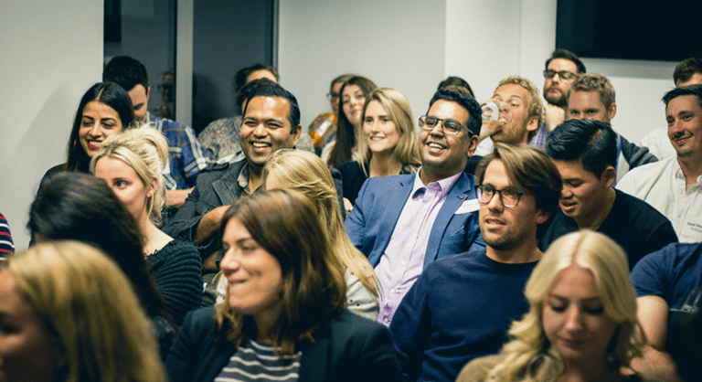

The International Biodiversity Conservation Summit 2022
The International Biodiversity Conservation Summit is recognized as the most important international meeting for conservation professionals and students. This year, the conference will take place at the Trondheim Science Museum from the 24 – 25 March, 2022. Attendees gather for lively discussions and scientific presentations on the nexus between biodiversity conservation and genetics, ecology, biogeography, anthropology, economics, conservation marketing, religion, and more.
Please contact us for any further questions about the Biodiversity Conservation summit 2022!
summit2022@tibcs-conf.orgThe International Biodiversity Conservation Summit 2022 Logo
The logo for this year’s summit was decided through the logo competition from 8. January to 30. January. After online public voting and the Selection committee’s judging process, the logo from John Doe won the prize.
See past Conservation Summits
Take a look at the last two Biodiversity Conservation Summits which took place in Nairobi and in Warsaw
